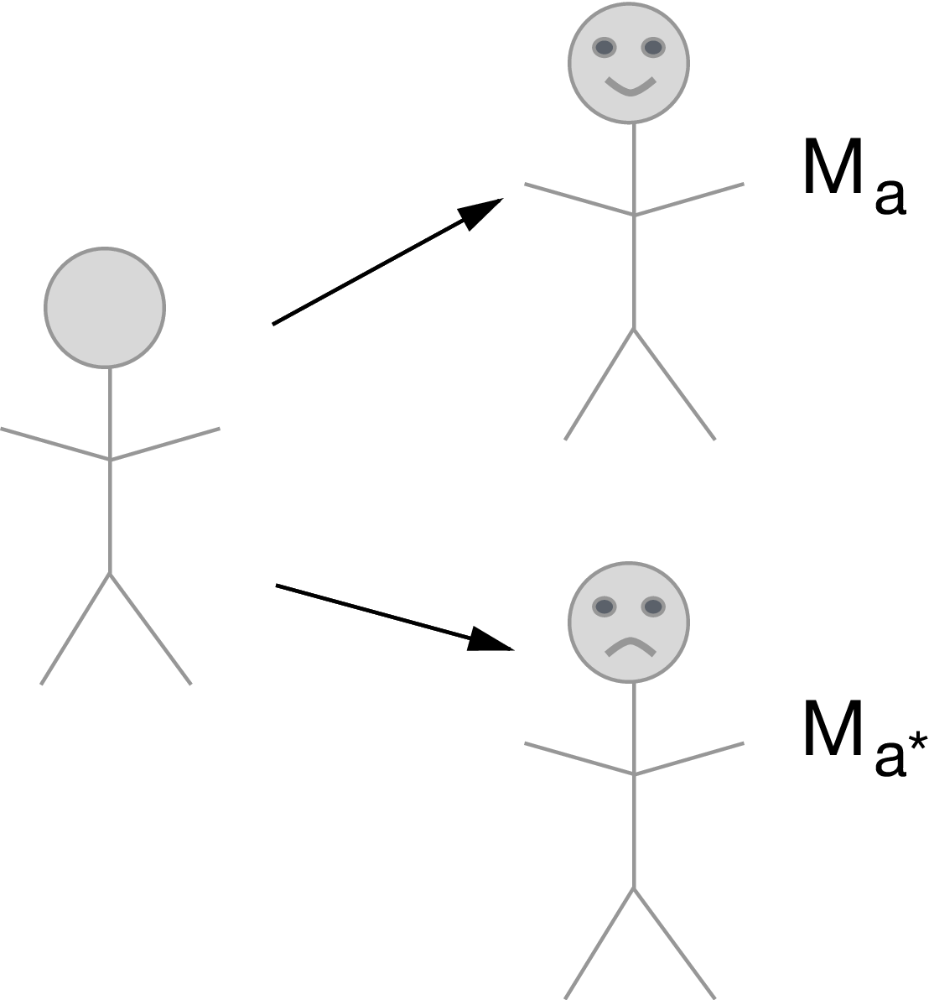

- The project is out-of-sync -- use `renv::status()` for details.2 Types of path-specific causal mediation effects
- Controlled direct effects
- Natural direct and indirect effects
- Interventional direct and indirect effects
Code
\dimendef\prevdepth=0
\pgfdeclarelayer{background}
\pgfsetlayers{background,main}
\usetikzlibrary{arrows,positioning}
\tikzset{
>=stealth',
punkt/.style={
rectangle,
rounded corners,
draw=black, very thick,
text width=6.5em,
minimum height=2em,
text centered},
pil/.style={
->,
thick,
shorten <=2pt,
shorten >=2pt,}
}
\newcommand{\Vertex}[2]
{\node[minimum width=0.6cm,inner sep=0.05cm] (#2) at (#1) {$#2$};
}
\newcommand{\VertexR}[2]
{\node[rectangle, draw, minimum width=0.6cm,inner sep=0.05cm] (#2) at (#1) {$#2$};
}
\newcommand{\ArrowR}[3]
{ \begin{pgfonlayer}{background}
\draw[->,#3] (#1) to[bend right=30] (#2);
\end{pgfonlayer}
}
\newcommand{\ArrowL}[3]
{ \begin{pgfonlayer}{background}
\draw[->,#3] (#1) to[bend left=45] (#2);
\end{pgfonlayer}
}
\newcommand{\EdgeL}[3]
{ \begin{pgfonlayer}{background}
\draw[dashed,#3] (#1) to[bend right=-45] (#2);
\end{pgfonlayer}
}
\newcommand{\Arrow}[3]
{ \begin{pgfonlayer}{background}
\draw[->,#3] (#1) -- +(#2);
\end{pgfonlayer}
}
\begin{tikzpicture}
\Vertex{-4, 0}{W}
\Vertex{0, 0}{M}
\Vertex{-2, 0}{A}
\Vertex{2, 0}{Y}
\Arrow{W}{A}{black}
\Arrow{A}{M}{black}
\Arrow{M}{Y}{black}
\ArrowL{W}{Y}{black}
\ArrowL{A}{Y}{black}
\ArrowL{W}{M}{black}
\end{tikzpicture}
2.1 Controlled direct effects
\[\psi_{\text{CDE}} = \E(Y_{1,m} - Y_{0,m})\]

- Set the mediator to a reference value \(M=m\) uniformly for everyone in the population
- Compare \(A=1\) vs \(A=0\) with \(M=m\) fixed
2.1.1 Identification assumptions:
- Confounder assumptions:
- \(A \indep Y_{a,m} \mid W\)
- \(M \indep Y_{a,m} \mid W, A\)
- Positivity assumptions:
- \(\P(M = m \mid A=a, W) > 0 \text{ } a.e.\)
- \(\P(A=a \mid W) > 0 \text{ } a.e.\)
Under the above identification assumptions, the controlled direct effect can be identified: \[ \E(Y_{1,m} - Y_{0,m}) = \E\{ \color{ForestGreen}{\E(Y \mid A=1, M=m, W) - \E(Y \mid A=0, M=m, W)} \} \]
-
For intuition about this formula in R, let’s continue with a toy example:
-
First we fit a correct model for the outcome
Assume we would like the CDE at \(m=0\)
-
Then we generate predictions \[ \color{ForestGreen}{\E(Y \mid A=1, M=m, W)} \text{ and } \color{ForestGreen}{\E(Y \mid A=0, M=m, W)} \ : \]
-
Then we compute the difference between the predicted values \(\color{ForestGreen}{\E(Y \mid A=1, M=m, W) - \E(Y \mid A=0, M=m, W)}\), and average across values of \(W\)
2.1.2 Is this the estimand I want?
- Makes the most sense if can intervene directly on \(M\)
- And can think of a policy that would set everyone to a constant level \(m \in \mathcal{M}\).
- Judea Pearl calls this prescriptive.
- Can you think of an example? (Air pollution, rescue inhaler dosage, hospital visits…)
- Does not provide a decomposition of the average treatment effect into direct and indirect effects.
What if our research question doesn’t involve intervening directly on the mediator?
What if we want to decompose the average treatment effect into its direct and indirect counterparts?
2.2 Natural direct and indirect effects
Still using the same DAG as above,
Recall the definition of the nested counterfactual: \[\begin{equation*} Y_{1, M_0} = f_Y(W, 1, M_0, U_Y) \end{equation*}\]
-
Interpreted as the outcome for an individual in a hypothetical world where treatment was given but the mediator was held at the value it would have taken under no treatment

Recall that, because of the definition of counterfactuals \[\begin{equation*} Y_{1, M_1} = Y_1 \end{equation*}\]
Then we can decompose the average treatment effect \(\E(Y_1-Y_0)\) as follows
\[\begin{equation*} \E[Y_{1,M_1} - Y_{0,M_0}] = \underbrace{\E[Y_{\color{red}{1},\color{blue}{M_1}} - Y_{\color{red}{1},\color{blue}{M_0}}]}_{\text{natural indirect effect}} + \underbrace{\E[Y_{\color{blue}{1},\color{red}{M_0}} - Y_{\color{blue}{0},\color{red}{M_0}}]}_{\text{natural direct effect}} \end{equation*}\]
- Natural direct effect (NDE): Varying treatment while keeping the mediator fixed at the value it would have taken under no treatment
- Natural indirect effect (NIE): Varying the mediator from the value it would have taken under treatment to the value it would have taken under control, while keeping treatment fixed
2.2.1 Identification assumptions:
- \(A \indep Y_{a,m} \mid W\)
- \(M \indep Y_{a,m} \mid W, A\)
- \(A \indep M_a \mid W\)
- \(M_0 \indep Y_{1,m} \mid W\)
- and positivity assumptions
2.2.2 Cross-world independence assumption
What does \(M_0 \indep Y_{1,m} \mid W\) mean?
- Conditional on \(W\), knowledge of the mediator value in the absence of treatment, \(M_0\), provides no information about the outcome under treatment, \(Y_{1,m}\).
- Can you think of a data-generating mechanism that would violate this assumption?
- Example: in a randomized study, whenever we believe that treatment assignment works through adherence (i.e., almost always), we are violating this assumption (more on this later).
- Cross-world assumptions are problematic for other reasons, including:
- You can never design a randomized study where the assumption holds by design.
If the cross-world assumption holds, can write the NDE as a weighted average of controlled direct effects at each level of \(M=m\).
\[ \E \sum_m \{\E(Y_{1,m} \mid W) - \E(Y_{0,m} \mid W)\} \P(M_{0}=m \mid W) \]
- If CDE(\(m\)) is constant across \(m\), then CDE = NDE.
2.2.3 Identification formula:
Under the above identification assumptions, the natural direct effect can be identified: \[\begin{equation*} \E(Y_{1,M_0} - Y_{0,M_0}) = \E[\color{Goldenrod}{\E\{}\color{ForestGreen}{\E(Y \mid A=1, M, W) - \E(Y \mid A=0, M, W)}\color{Goldenrod}{\mid A=0,W\}}] \end{equation*}\]
The natural indirect effect can be identified similarly.
-
Let’s dissect this formula in
R: -
First we fit a correct model for the outcome
-
Then we generate predictions \(\color{ForestGreen}{\E(Y \mid A=1, M, W)} \text{ and }\color{ForestGreen}{\E(Y \mid A=0, M, W)}\) with \(A\) fixed but letting \(M\) and \(W\) take their observed values
Then we compute the difference between the predicted values \(\color{ForestGreen}{\E(Y \mid A=1, M, W) - \E(Y \mid A=0, M, W)},\)
-
and use this difference as a pseudo-outcome in a regression on \(A\) and \(W\): \(\color{Goldenrod}{\E\{}\color{ForestGreen}{\E(Y \mid A=1, M, W) - \E(Y \mid A=0, M, W)}\color{Goldenrod}{\mid A=0,W\}}\)
-
Now we predict the value of this pseudo-outcome under \(A=0\), and average the result
2.2.4 Is this the estimand I want?
- Makes sense to intervene on \(A\) but not directly on \(M\).
- Want to understand a natural mechanism underlying an association / total effect. J. Pearl calls this descriptive.
- NDE + NIE = total effect (ATE).
- Okay with the assumptions.
What if our data structure involves a post-treatment confounder of the mediator-outcome relationship (e.g., adherence)?
Code
\dimendef\prevdepth=0
\pgfdeclarelayer{background}
\pgfsetlayers{background,main}
\usetikzlibrary{arrows,positioning}
\tikzset{
>=stealth',
punkt/.style={
rectangle,
rounded corners,
draw=black, very thick,
text width=6.5em,
minimum height=2em,
text centered},
pil/.style={
->,
thick,
shorten <=2pt,
shorten >=2pt,}
}
\newcommand{\Vertex}[2]
{\node[minimum width=0.6cm,inner sep=0.05cm] (#2) at (#1) {$#2$};
}
\newcommand{\VertexR}[2]
{\node[rectangle, draw, minimum width=0.6cm,inner sep=0.05cm] (#2) at (#1) {$#2$};
}
\newcommand{\ArrowR}[3]
{ \begin{pgfonlayer}{background}
\draw[->,#3] (#1) to[bend right=30] (#2);
\end{pgfonlayer}
}
\newcommand{\ArrowL}[3]
{ \begin{pgfonlayer}{background}
\draw[->,#3] (#1) to[bend left=45] (#2);
\end{pgfonlayer}
}
\newcommand{\EdgeL}[3]
{ \begin{pgfonlayer}{background}
\draw[dashed,#3] (#1) to[bend right=-45] (#2);
\end{pgfonlayer}
}
\newcommand{\Arrow}[3]
{ \begin{pgfonlayer}{background}
\draw[->,#3] (#1) -- +(#2);
\end{pgfonlayer}
}
\begin{tikzpicture}
\Vertex{0, -1}{Z}
\Vertex{-4, 0}{W}
\Vertex{0, 0}{M}
\Vertex{-2, 0}{A}
\Vertex{2, 0}{Y}
\ArrowR{W}{Z}{black}
\Arrow{Z}{M}{black}
\Arrow{W}{A}{black}
\Arrow{A}{M}{black}
\Arrow{M}{Y}{black}
\Arrow{A}{Z}{black}
\Arrow{Z}{Y}{black}
\ArrowL{W}{Y}{black}
\ArrowL{A}{Y}{black}
\ArrowL{W}{M}{black}
\end{tikzpicture}

2.2.5 Unidentifiability of the NDE and NIE in this setting
In this example, natural direct and indirect effects are not generally point identified from observed data \(O=(W,A,Z,M,Y)\).
The reason for this is that the cross-world counterfactual assumption \[ Y_{1,m} \indep M_0 \mid W \] does not hold in the above directed acyclic graph.
-
To give intuition, we focus on the counterfactual outcome \(Y_{A=1, M_{A=0}}\).
- This counterfactual outcome involves two counterfactual worlds simultaneously: one in which \(A=1\) for the first portion of the counterfactual outcome, and one in which \(A=0\) for the nested portion of the counterfactual outcome.
- Setting \(A=1\) induces a counterfactual treatment-induced confounder, denoted \(Z_{A=1}\). Setting \(A=0\) induces another counterfactual treatment-induced confounder, denoted \(Z_{A=0}\).
- The two treatment-induced counterfactual confounders, \(Z_{A=1}\) and \(Z_{A=0}\) share unmeasured common causes, \(U_Z\), which creates a spurious association.
- Because \(Z_{A=1}\) is causally related to \(Y_{A=1, M=m}\), and \(Z_{A=0}\) is also casually related to \(M_{A=0}\), the path through \(U_Z\) means that the backdoor criterion is not met for identification of \(Y_{A=1, M_{A=0}}\), i.e., \(M_{0} \notindep Y_{A=1, m} \mid W\), where \(W\) denotes baseline covariates.
Code
\dimendef\prevdepth=0
\pgfdeclarelayer{background}
\pgfsetlayers{background,main}
\usetikzlibrary{arrows,positioning}
\tikzset{
>=stealth',
punkt/.style={
rectangle,
rounded corners,
draw=black, very thick,
text width=6.5em,
minimum height=2em,
text centered},
pil/.style={
->,
thick,
shorten <=2pt,
shorten >=2pt,}
}
\newcommand{\Vertex}[2]
{\node[minimum width=0.6cm,inner sep=0.05cm] (#2) at (#1) {$#2$};
}
\newcommand{\VertexR}[2]
{\node[rectangle, draw, minimum width=0.6cm,inner sep=0.05cm] (#2) at (#1) {$#2$};
}
\newcommand{\ArrowR}[3]
{ \begin{pgfonlayer}{background}
\draw[->,#3] (#1) to[bend right=30] (#2);
\end{pgfonlayer}
}
\newcommand{\ArrowL}[3]
{ \begin{pgfonlayer}{background}
\draw[->,#3] (#1) to[bend left=45] (#2);
\end{pgfonlayer}
}
\newcommand{\EdgeL}[3]
{ \begin{pgfonlayer}{background}
\draw[dashed,#3] (#1) to[bend left=45] (#2);
\end{pgfonlayer}
}
\newcommand{\EdgeR}[3]
{ \begin{pgfonlayer}{background}
\draw[dashed,#3] (#1) to[bend right=-45] (#2);
\end{pgfonlayer}
}
\newcommand{\Arrow}[3]
{ \begin{pgfonlayer}{background}
\draw[->,#3] (#1) -- +(#2);
\end{pgfonlayer}
}
\begin{tikzpicture}
\Vertex{0, 1}{Z_0}
\Vertex{0, -1}{Z_1}
\Vertex{-2, 0}{U_Z}
\Vertex{2, 1}{M_0}
\Vertex{4, -1}{Y_{1, m}}
\Arrow{Z_0}{M_0}{black}
\Arrow{Z_1}{Y_{1, m}}{black}
\Arrow{U_Z}{Z_0}{black}
\Arrow{U_Z}{Z_1}{black}
\end{tikzpicture}
However:
- We can actually actually identify the NIE/NDE in the above setting if we are willing to invoke monotonicity between a treatment and one or more binary treatment-induced confounders (Tchetgen Tchetgen and VanderWeele 2014).
- Assuming monotonicity is also sometimes referred to as assuming “no defiers” – in other words, assuming that there are no individuals who would do the opposite of the encouragement.
- Monotonicity may seem like a restrictive assumption, but may be reasonable in some common scenarios (e.g., in trials where the intervention is randomized treatment assignment and the treatment-induced confounder is whether or not treatment was actually taken – in this setting, we may feel comfortable assuming that there are no “defiers”, frequently assumed when using IVs to identify causal effects)
Tchetgen Tchetgen, Eric J, and Tyler J VanderWeele. 2014. “On Identification of Natural Direct Effects When a Confounder of the Mediator Is Directly Affected by Exposure.” Epidemiology 25 (2): 282.
Note: CDEs are still identified in this setting. They can be identified and estimated similarly to a longitudinal data sructure with a two-time-point intervention.
2.3 Interventional (in)direct effects
- Let \(G_a\) denote a random draw from the distribution of \(M_a \mid W\)
- Define the counterfactual \(Y_{1,G_0}\) as the counterfactual variable in a hypothetical world where \(A\) is set \(A=1\) and \(M\) is set to \(M=G_0\) with probability one.

Define \(Y_{0,G_0}\) and \(Y_{1,G_1}\) similarly
Then we can define: \[ \E[Y_{1,G_1} - Y_{0,G_0}] = \underbrace{\E[Y_{\color{red}{1}, \color{blue}{G_1}} - Y_{\color{red}{1}, \color{blue}{G_0}}]}_{\text{interventional indirect effect}} + \underbrace{\E[Y_{\color{blue}{1},\color{red}{G_0}} - Y_{\color{blue}{0}, \color{red}{G_0}}]}_{\text{interventional direct effect}} \]
Note that \(\E[Y_{1,G_1} - Y_{0,G_0}]\) is still a total effect of treatment, even if it is different from the ATE \(\E[Y_{1} - Y_{0}]\)
We gain in the ability to solve a problem, but lose in terms of interpretation of the causal effect (cannot decompose the ATE)
2.3.1 An alternative definition of the effects:
- Above we defined \(G_a\) as a random draw from the distribution of \(M_a \mid W\)
- What if instead we define \(G_a\) as a random draw from the distribution of \(M_a \mid (Z_a,W)\)
- It turns out the indirect effect defined in this way only measures the path \(A\rightarrow M \rightarrow Y\), and not the path \(A\rightarrow Z\rightarrow M \rightarrow Y\)
- There may be important reasons to choose one over another (e.g., survival analyses where we want the distribution conditional on \(Z\), instrumental variable designs where it doesn’t make sense to condition on \(Z\))
2.3.2 Identification assumptions:
- \(A \indep Y_{a,m} \mid W\)
- \(M \indep Y_{a,m} \mid W, A, Z\)
- \(A \indep M_a \mid W\)
- and positivity assumptions.
Under these assumptions, the population interventional direct and indirect effect is identified: \[\begin{align*} \E &(Y_{a, G_{a'}}) = \\ & \E\left[\color{Purple}{\E\left\{\color{Goldenrod}{\sum_z} \color{ForestGreen}{\E(Y \mid A=a, Z=z, M, W)} \color{Goldenrod}{\P(Z=z \mid A=a, W)}\mid A=a', W\right\}} \right] \end{align*}\]
-
Let’s dissect this formula in
R: Let us compute \(\E(Y_{1, G_0})\) (so that \(a = 1\), and \(a'=0\)).
-
First, fit a regression model for the outcome, and compute \(\color{ForestGreen}{\E(Y \mid A=a, Z=z, M, W)}\) for all values of \(z\)
-
Now we fit the true model for \(Z \mid A, W\) and get the conditional probability that \(Z=1\) fixing \(A=1\)
-
Now we compute the following pseudo-outcome: \(\color{Goldenrod}{\sum_z}\color{ForestGreen}{\E(Y \mid A=a, Z=z, M, W)} \color{Goldenrod}{\P(Z=z \mid A=a, w)}\)
-
Now we regress this pseudo-outcome on \(A,W\), and compute the predictions setting \(A=0\), that is, []
-
And finally, just average those predictions!
-
This was for \((a,a')=(1,0)\). Can do the same with \((a,a')=(1,1)\), and \((a,a')=(0,0)\) to obtain an effect decomposition
\[\begin{equation*} \E[Y_{1,G_1} - Y_{0,G_0}] = \underbrace{\E[Y_{\color{red}{1}, \color{blue}{G_1}} - Y_{\color{red}{1}, \color{blue}{G_0}}]}_{\text{interventional indirect effect}} + \underbrace{\E[Y_{\color{blue}{1},\color{red}{G_0}} - Y_{\color{blue}{0}, \color{red}{G_0}}]}_{\text{interventional direct effect}} \end{equation*}\]
2.3.3 Is this the estimand I want?
- Makes sense to intervene on \(A\) but not directly on \(M\).
- Goal is to understand a descriptive type of mediation.
- Okay with the assumptions!
2.3.4 But, there is an important limitation of interventional effects
Miles (2022) recently uncovered an important limitation of these effects, which can be described as follows. The sharp mediational hull hypothesis can be defined as
Miles, Caleb H. 2022. “On the Causal Interpretation of Randomized Interventional Indirect Effects.” arXiv Preprint arXiv:2203.00245. https://arxiv.org/abs/2203.00245.
\[ H_0:Y(a, M(a')) = Y(a, M(a^\star));\text{ for all }a, a', a^\star \ . \]
The problem is that interventional effects are not guaranteed to be null when the sharp mediational hypothesis is true.
This could present a problem in practice if some subgroup of the population has a relationship between \(A\) and \(M\), but not between \(M\) and \(Y\). Then, another distinct subgroup of the population has a relationship between \(M\) and \(Y\) but not between \(A\) and \(M\). In such a scenario, the interventional indirect effect would be nonzero, but there would be no one person in the population whose effect of \(A\) on \(Y\) would be mediated by \(M\).
More details in the original paper.
2.4 Estimand Summary